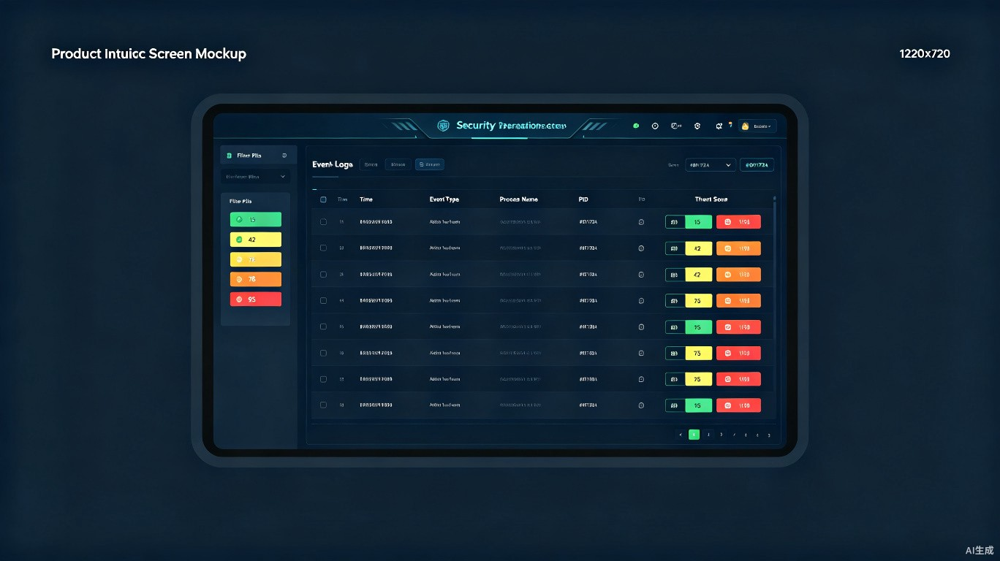
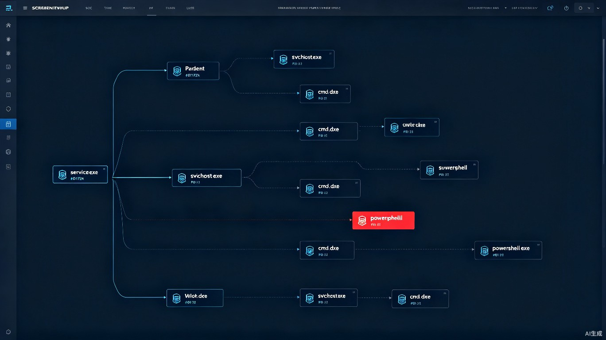
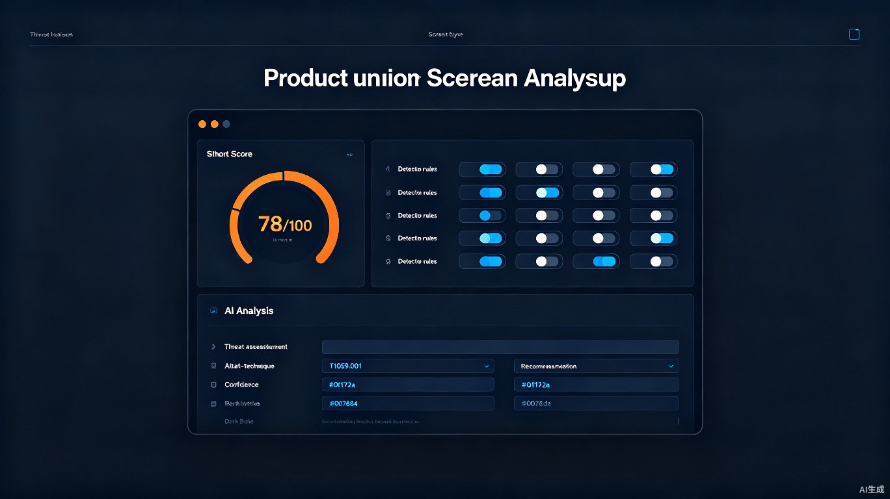

一款 Windows 终端安全溯源系统，单文件免安装。一键静默部署 Sysmon，实时采集进程、网络、DNS、文件、注册表全量事件，通过四层分析管道完成从海量原始日志到精准威胁研判的闭环。支持本地 GUI 客户端与浏览器双模式，数据不出域。
从事件采集到威胁告警，六模块协同工作，覆盖终端安全的完整生命周期
每条 Sysmon 事件依次经过四层处理，从原始日志逐步提炼出可操作的威胁情报
Web 浏览器端六标签页，本地 Wails 客户端同步支持



规则引擎实时评分 + 大模型深度定性，双层协同研判
局域网内多主机协同采集，自动提取正常进程画像，构建企业专属安全基线
| 镜像路径 | 平均出现次数 | 覆盖主机数 | 典型父进程 | 外联目标 | 状态 | 操作 |
|---|
Go + Wails v1 + SQLite + 原生 WebSocket，单二进制交付